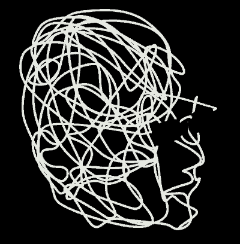

Primary chamber
“Med pannan i djupa veck över hur allt kommer att framstå för kommande generationer...”
This variation makes the line feel like evidence or signal rather than soft immersion.

A second impression type for VERBOTEN MEDIA: more editorial, more fractured, more like a dossier of weather and pressure than a singular cinematic chamber.

“Med pannan i djupa veck över hur allt kommer att framstå för kommande generationer...”
This variation makes the line feel like evidence or signal rather than soft immersion.
Några nätter senare ska han drömma att ön där de byggt sin ekoby fått bud om att en militant gruppering ska inta landet.
The second template works when the pressure should feel clipped, staged, and slightly forensic.
Förläggaren drömde att närområdet var oklart uppdelat i olika militanta grupperingar, där fanns en miniskvadron av marscherande militärklädda som han i en tidigare dröm gjorde misstaget att interagera med, nackskottet kom i plytet och efter en kort stund av identifikation där drömgruppens drömledare alltså vred huvudet och fokuserade blicken på honom innan han lyfte personvapnet och fyrade av; en mindre organiserad men likväl linjeströmmad samling andragenerationister som är artiga och rätt roliga tills de underhåller sig med helt andra sysselsättningar...
Förläggaren hade nyst så det dånade i hela lokalen, vridit VR-glasögonen runt nackbenen och svurit åt barnen som lekte där; han hade stekt en ryggbiff, slängt en saint augur i kokkärlet och låtit sänka en handfull pommes fritt i en ack så efterlängtad air fryer...

Slot B reads here like a panel in an editorial spread rather than a cinematic secondary shot.

Slot C becomes a hard cut inward, almost like a dossier insert.

The archival slot can feel stronger here because the overall page logic is already more editorial.

More atmospheric, less severe.

Leans further into metamorphosis and secrecy.

Lets the page flirt with wit without losing the black-field seriousness.